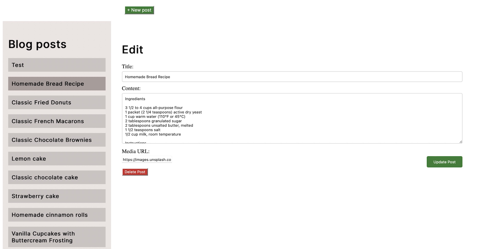

Dough Dreams

Description
Dough Dreams is a responsive blogging application designed to manage and showcase pastry and cake recipes. This front-end user interface interacts with an existing API to allow users to view dynamic blog posts and for the blog owner to manage their content easily. The application includes public pages for viewing blog content and admin pages for user registration, login, and post management. This project utilizes design principles, HTML, CSS, and JavaScript.
Key features include:
interactive banner carousel
static list of latest posts
responsive blog post pages
blog post edit pages for the owner.
account login page
registration pages
This project is built with HTML & CSS & JavaScript